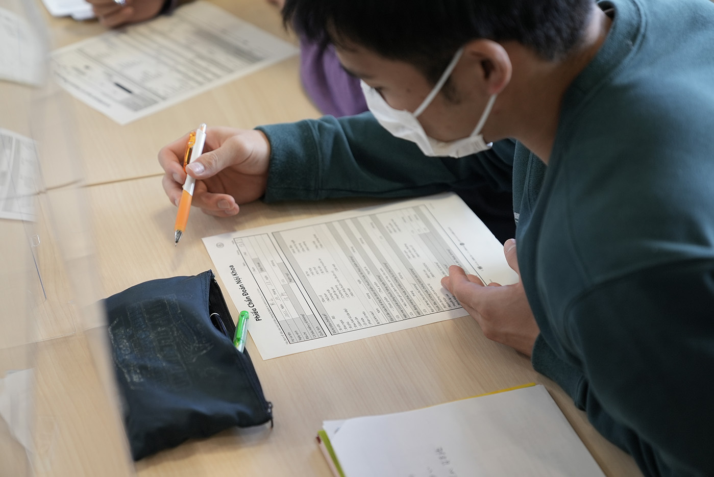
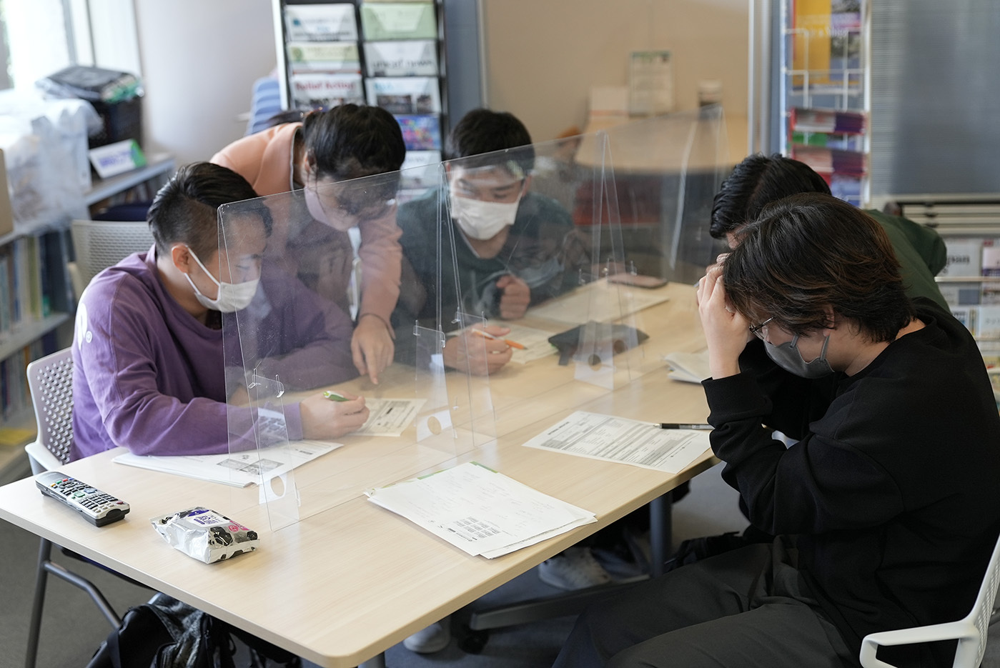

Laboratory Life
Our third-year students conducted a field study at Shiga Intercultural Association for Globalization

Overview
On October 13th, 2022, our third-year students visited Shiga Intercultural Association for Globalization(SIA) to design an application to assist foreigners in Japan.
In this field study, students listened to a presentation about foreigners in Shiga and the supports provided by SIA. The students also conducted an interview and discussed various issues that foreigners in Shiga prefecture face.

